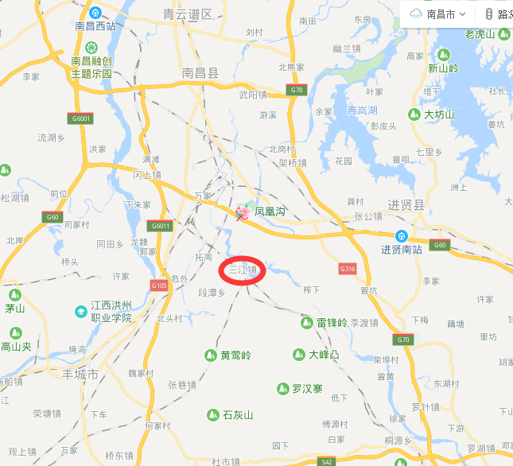
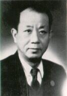
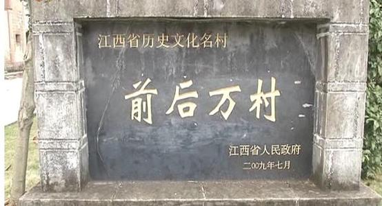
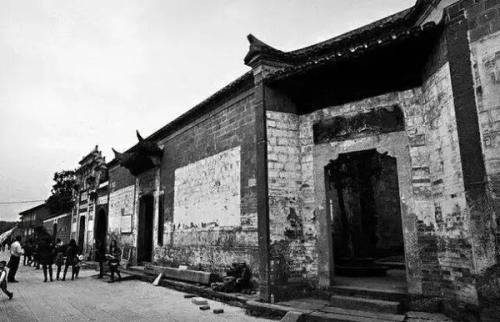
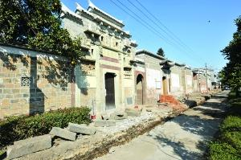
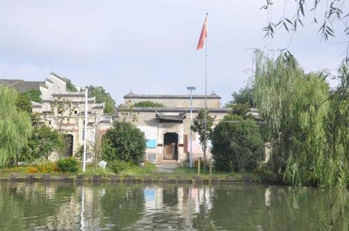
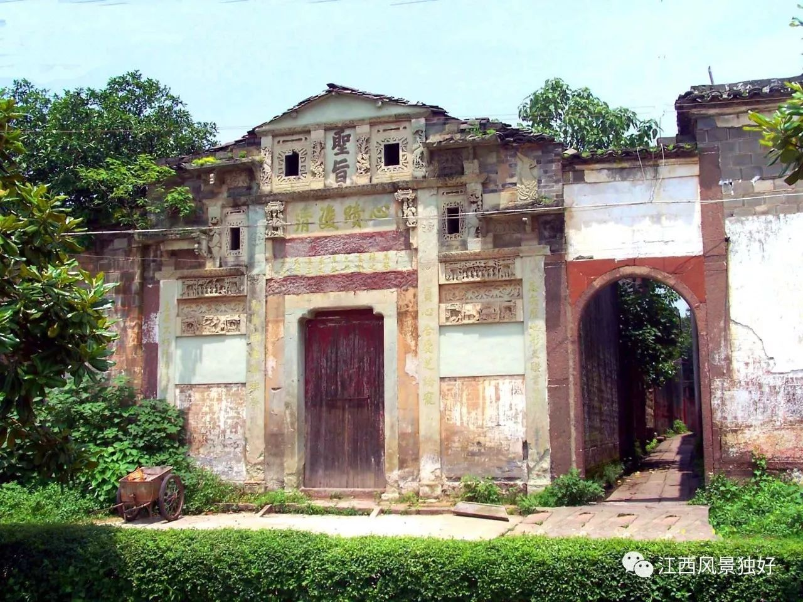
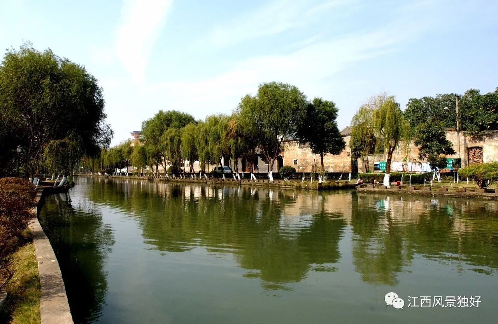
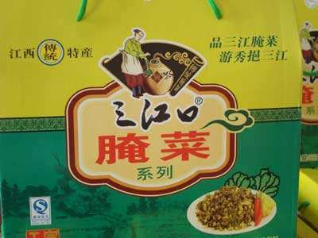
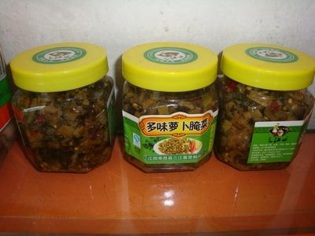

一、历史沿革及地理位置
1.历史变革
三江镇是江西省为数不多的千年古镇，南昌县经济排名第三，也是江西省综合改革试点镇，已被列为全省社会主义新农村建设重点示范镇。
1949年属塘埠、板湖等乡，1958年属太阳升公社，1959年改吴石公社，1968年改三江公社，1984年建镇。1997年，面积26.6平方千米，人口2.6万，辖三江居委会及三江、汗塘、松林、山下、东庄、竹山、源溪、岗坊、徐罗9个行政村。
2.地理位置
三江镇位于南昌县东南，东靠黄马乡，西临丰城市段潭乡，南为丰城袁渡镇，北至广福镇，因为抚河支流的箭江、隐溪、彭溪三条河的交汇口，所以历史上又称三江口。全镇29.2平方公里，辖9个村委会，96个自然村，2个居委会（辖三江、乌龙街等2个居委会，三江、汗塘（桥头万家）、松林、山下、东庄、竹山、源溪、岗坊、徐罗等9个村委会。镇政府驻三江口）。 三江镇属赣抚平原地区，侵蚀堆积平原地形，地势南高北低，京九铁路，向莆铁路南北穿越，抚河总干渠，青丰山河四周环绕镇域。三江镇土地肥沃，气候温和，雨水充沛，灌溉便利，日照充足，无霜期长，有利于农作物生产。

二、经济发展
主要经济指标运行态势良好。
2014年，全镇财政总收入首次突破5000万元大关，完成了5128.1万元，超额完成108.1万元，同比增长17.58%。其中国税完成2568.6万元，地税完成2559.5万元。地方公共财政预算收入达2299万元，超额完成379万元，同比增长37.76%，其中国税完成643.4万元，地税完成1655.6万元。规模以上工业增加值完成9836.6万元，规模以上工业主营收入4.46亿，完成任务的106%。500万元以上固定资产投资完成5.4亿元，同比增长11.11%，其中500万以上工业固定资产投资2.1亿元；限额以上社会消费品零售总额完成2.29亿元，同比增长15.66%。
截至2018年10月底，我镇财政总收入完成4391.5万元，已完成目标任务的126.3%；地方公共财政收入已完成1966万元，已完成目标任务的127.2%，镇财政总收入总量相较去年同月份总量增长幅度27.16%，一般公共预算收入总量相较去年同月份总量增长幅度28.96%。涌现了一批新税源，如南昌县啟鸿养殖有限公司、江西空中生态农业有限公司、江西旭峰农业发展有限公司等，发展潜力可观。
三、教育及著名人物
1.教育、社会事业
三江镇有三江中心小学及三江中学。
三江教育事业，蒸蒸日上。经万部长引介，港澳台侨朋友热情相助，香港新世界董事局主席郑裕彤先生捐资150万元，为三江中学兴建“挹秀楼”；全国政协委员、香港中华总商会会长、香港新华集团总裁蔡冠深先生捐资50万元，为三江小学兴建“冠深楼”，并捐资100万元设立教育奖励基金；香港昌腾发展中国有限公司董事局原顾问万修元先生携家人捐资50万元兴建三江中学“修元楼”，并捐资100万元设立教育奖励基金。
2.著名人物
共和国第一位女省委书记万绍芬、世界著名桥梁专家蔡方荫就是三江优秀儿女的杰出代表。

四、旅游景点
前后万古村经先辈精心规划经营，古建筑群房宅整肃，巷道平整，门塘、河堤、祠宇、古井布局合理，蔚为壮观。自宋迄明代肇基以来，世代繁衍吕盛，为南邑大族，据抗日战争前民国二十二年，一次正式编排门牌户号数据，民居和民宅共158幢现经调查，其中因毁于日寇滥炸，烧掠以及其它变故原因，现仍保存者计61幢，大多数均属明、清时期建筑，少数为民国时期建筑，总建筑面积达210000平方米。2009年7月，经江西省人民政府批准定为第三批省级历史文化名存之一。
古村绿林芳草,风景如画,文物古迹众多,有清朝光绪帝御批建造的贞洁牌坊——双节坊、南昌市文物保护单位——道光古井、传统宗法文化的象征——必大之门、古代科举辉煌的见证——金榜旗杆石,江南水乡碧水如镜的鲤鱼塘、民间治水的典范——石堤十八坡、北宋兵部尚书爱国先贤——万迪公铜像以及万佑儿宅等53幢鳞次栉比、传统古韵的明清徽派建筑。






五、特色美食
牛汤锅俗称牛扎碎，原料价廉，风味地道，煨制方法简单，营养丰富，对食客具有极强的吸引，在三江流传千年，经久不衰。

江西传统特产“三江口多味萝卜腌菜”源于宋代，久负盛名，素有“一斤腌菜一寸金”之誉。“三江口萝卜腌菜”是唐朝贡品，92年荣获香港国际食品博览会特别奖，92年中国农业食品博览会银质奖。该产品选用特种小萝卜菜为主要原料，用优质麻油辅以多种配料，运用传统工艺和现代烹调技术，精制加工而成。秀挹三江萝卜腌菜原料经过种子筛选、梅雨下地、三伏采收、小雪腌制窖藏、立春起缸、调味腌制、主料炸制、辅料炒制、汁料熬制、出盘等9个主要工艺环节18道工艺程序制成。其特色是：色泽金黄，香气浓郁，鲜嫩清脆，滑润可口，风味独特，方便实惠，可直接食用，是居家旅游的小吃佳品，深受国内外消费者的喜爱，产品远销香港、东南亚、深圳、上海、北京等各大中城市。



------------三江人民欢迎您------------